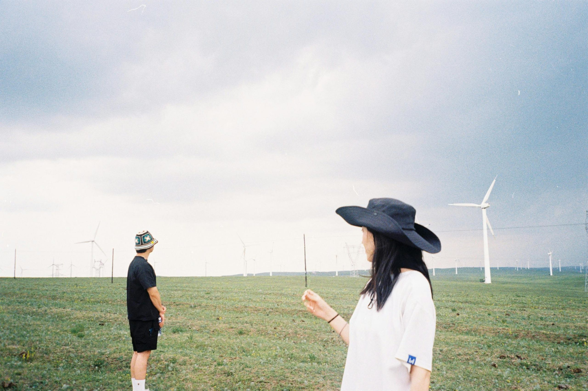

每次看見心儀的人，心跳都加快，腦海裡卻只有「要說什麼才不尷尬？」這個煩惱。其實，很多人都有這種緊張和猶豫，不知道怎麼打破沉默。搭訕不是天生會，而是可以學會的技巧。
本篇文章會帶你了解最實用的方法，讓你勇敢開口、輕鬆自然開始聊天。只要抓住幾個小訣竅，搭訕可以變得不再令人害怕，甚至會讓你期待每一次新的相遇。準備好一起解開搭訕的緊張，找到最適合自己的開場白。
認識自己，培養對話自信
面對心儀的對象，很多人第一步就卡關了。想像一下，你就像準備參加重要比賽的選手，其實最需要的是調整好心態。真正有魅力的對話，源自於認識自己、肯定自己。自信不是天生，而是可以一點一滴累積起來的。從了解自己的優點，到用簡單動作加分外在，每一分努力都會讓搭訕這件事變得更自然，讓你打從心裡願意跨出第一步。
面對搭訕焦慮: 說明搭訕前的緊張，提供簡單的心理練習降低壓力
雙腳發軟、手心冒汗、腦袋一片空白，這些緊張感覺，幾乎沒人能避得過。這很正常，因為「害怕被拒絕」就是人性。與其努力驅趕這些感受，不如學會和緊張共處。學會放慢呼吸，安撫心跳，把注意力轉回自己，會讓你站得更穩。
快速心理練習來幫助你在搭訕前穩定情緒：
- 深呼吸三次：每一次都慢慢吸氣、慢慢吐氣，帶走身體的緊張感。
- 正念觀察：閉上眼睛，感受腳踩在地上的觸感，讓自己回到當下。
- 給自己一句鼓勵：「不管結果如何，我都勇敢嘗試了。」這句話貫徹全局，馬上撐起信心。
- 預演場景：在腦海裡預想和對方的開場，像在演短劇一樣，一次比一次自然。
只要把焦慮轉化成微微的興奮感，你會發現主動開口的門檻突然變得很低。
提升自身魅力快速小方法: 穿著、儀表、笑容等，一步步加分自己
自信的火花，很多時候來自你的外在。不是追求完美，而是刻意在細節上下點功夫。這就像店面招牌一樣，乾淨明亮、充滿笑容，自然會吸引人想多看一眼。
Photo by RDNE Stock project
讓自己更有吸引力的簡單步驟：
- 穿搭有特色但不浮誇：選個舒適又適合當天場合的服裝，簡約大方最安全，也能展現個人風格。
- 基本儀容打理：頭髮整理乾淨、臉部清潔、指甲修剪，讓人感覺你是會照顧自己的人。
- 保持自然微笑：溫暖的微笑是最便宜但效果最佳的名片，打開心門從表情開始。
- 挺直站姿與眼神交流：挺胸抬頭、眼神不飄移，會讓你瞬間加分，對方也更容易感受到你的真誠。
- 自信語調：開口時語調清晰有力，不快不慢，會讓對方更容易融入你的節奏。
每攻下一個小細節，自信就多一點，正式搭訕時也自然輕鬆許多。現在的你，已經比昨天更有魅力、更有自信往前邁進了！
觀察場合，抓住最佳時機
成功搭訕不只是鼓起勇氣，還需要讀懂現場氛圍，選對「時機」與「地點」。太急躁容易讓人卻步，選錯場合則很容易尷尬收場。從日常生活的咖啡廳、圖書館、運動場等場景出發，抓住細微線索，讓你順利展開對話，一切變得自然又輕鬆。
選對場合效果加倍: 咖啡廳、圖書館、運動場等場合，如何根據場合調整方式
想像一下，你在咖啡廳坐著，對方也正好點著同一款拿鐵，陽光落在桌面上，氣氛悠閒。如果你在這時主動輕聲寒暄，成功率自然加分。場合不只影響心情，更決定你們對話的自然程度。
- 咖啡廳：
這裡空間溫馨，人們習慣慢下腳步。可以用「這家招牌咖啡很厲害，你推薦哪一種？」自然開場。 - 圖書館：
需要溫柔、輕聲細語。可以觀察對方看的書，「這本書好像很有意思，你看過他的其他作品嗎？」既不打擾，又有共鳴。 - 運動場：
大家情緒高昂，開場話題可以動感一點。「你剛剛那一球超厲害，平常都在哪練？」讓對方有被欣賞的感覺。
不同場所，自然有不同節奏。找到與空間氛圍契合的話題，成功率翻倍。
善用身邊的小細節開場: 根據現場的小物或事件，做自然的話題切入
有時候，千言萬語不如一句貼近生活的小發現。現場的小物件、小事件，常常是最直接的搭訕密碼。
- 剛好下雨：
「雨下得好大，剛剛差點衝進來，你有帶傘嗎？」輕鬆一句就能搭起話題橋樑。 - 桌上書本或飲料：
「這款咖啡我還沒喝過，好喝嗎？」、「你也在看村上春樹，他哪本你最推薦？」 - 突發趣事：
比如老闆突然調錯單，「哈哈，今天點單都特別隨興，你有沒有遇過有趣的狀況？」
這些開場白貼近生活，零負擔。「現場感」是最容易引起共鳴的話題來源，讓對方第一時間感受到你的用心和觀察力。

Photo by yating yang
把握當下，留心身邊小細節，每個瞬間都可能是溫暖的起點。搭訕本就來自日常觀察，有心，你就能把握每次心動的機會。
開場白與話題選擇
一個好的開場白就像遞出友善的名片，既讓對方放鬆，也有機會讓對話延續下去。很多人以為要搭訕就得搞笑或說些驚人的話，其實越貼近日常、越真誠，自然越容易拉近距離。這一節分享幾個實用且不做作的開場例子，還有延伸話題的小技巧，讓你從第一句就抓住對方注意。
自然不尷尬的開場白範例
日常生活其實充滿開場的契機，只要觀察入微、勇敢開口，很快就能開啟對話。這裡整理幾個在生活中常見又實用的開場白，都是無壓力又容易延伸話題的方式：
- 詢問意見或建議
這是最親民、最低壓的開場白。例如在咖啡廳可以問：「你覺得這裡哪一款咖啡最好喝？」在書店則可以說：「你看過這本書嗎？推薦嗎？」 - 適度稱讚，但要真誠
誠懇的讚美能讓人瞬間放鬆，比方「你的穿搭很有風格，是自己挑的嗎？」或「你的氣質很特別，會讓人想多認識一下。」 - 聊相同的環境或事件
抓住當下的小事切入，「這家店的擺設蠻有趣的，你常來嗎？」或在等紅綠燈時隨手聊：「這附近最近有新開的甜點店，很值得一試！」 - 用幽默化解尷尬
如果氣氛適合，也可以加一點幽默感喘口氣：「這麼巧，今天大家都來排隊，是有什麼隱藏版美食嗎？」
這些開場白貼近日常，不會讓對方覺得被冒犯，也很容易順勢找話題延續。真正的自然就是與日常節奏毫無違和感。
讓對方感受到真誠關注
對話不是單向出擊，而是雙向交流。讓對方覺得你真在「聽」很關鍵，不光是開場，整個對話過程都要展現你的關心和好奇。
幾個讓對方舒服又安心的小技巧：
- 認真傾聽，不搶話
當對方回應時，給予適當眼神和點頭，讓對方知道你真的在聽。別急著插話，適時用簡單的回應如「真的假的？」、「好特別喔」增加互動感。 - 回應內容再提問
針對對方說的內容延伸，例如對方說喜歡跑步，可以輕鬆跟上：「那你最喜歡哪個跑步路線？有推薦嗎？」 - 避免過度吹捧或自誇
一直稱讚或把焦點拉回自己反而讓人有壓力。保持節奏對等，更能展現你的自信和成熟。 - 表現對細節的注意力
觀察並關心小細節，例如對方背了個特別的包包，就可以聊起來：「這個包設計很有特色，在哪裡買的？」
這些「互動感」的加分小動作，遠遠勝過空泛的話術。與其背幾個萬能開場，不如練習在每一次互動中用心觀察，真誠回應。對方會因你的這份用心，自然打開心房，對話也就能一路延續下去。
對話中的小技巧與禁忌
開始對話不只是講話，很多時候肢體語言、眼神和一些不經意的舉動，都直接影響對方的感受。如果你懂得用對方法，不但減少尷尬，還能大大加分。這一節會和你分享在互動中最實用的小技巧，以及需要避開的地雷區，讓你每一次開口都能舒服又自在。
正確的肢體語言與眼神互動
面對心儀對象時，語言其實只佔一小部分，更多還是靠你的身體語言和眼神去傳遞善意。
真正自然、迷人的對話，不只是用話語交流，更像是「心的對望」。
- 保持自然微笑
自然的笑容，會讓你看起來親切又易親近。沒有人能拒絕一個真誠的微笑，這比說幾句漂亮話更有用。 - 站姿要自信但不壓迫
輕鬆站好，肩膀打開，不要交叉手臂或插兜，給人溫和又自在的感覺。 - 適時點頭和回應
當對方說話時，簡單點頭或用「嗯」來回應。這讓對方感覺你在認真聆聽，而不是心不在焉。 - 維持眼神交流
適度的眼神接觸很重要。大約三到五秒看對方的眼睛，再自然移開，避免盯看讓人不自在，但如果一直閃躲，也會讓人感覺你沒信心。
舉個例子，你在對方講到興趣的時候點頭、輕笑、眼神溫暖，討喜程度立刻飆高。這些細節，不會太冒犯，也不會讓對方覺得你有距離。有時候，語言還沒開始，從肢體和眼神已經先贏了一半好感。
避免讓對方反感的話題與行為
不是每個話題都適合開場，也不是每個行為都能讓人舒服。聊天時要避開一些「地雷區」，才能維持輕鬆的互動氛圍。
常見的NG話題與行為：
- 私人物品或收入問題
剛認識就問：「你住哪裡？」「你薪水多少？」這很容易嚇到對方。 - 過度評論外貌或身材
稍微稱讚裝扮可以，但太私人或直白的外貌評論會讓人不舒服。 - 聊過去情感經歷
一開場聊前男友、前女友，或是感情挫折，除非彼此真的聊開，否則容易冷場。 - 強行加LINE/IG
對方還沒釋出友善訊號，就急著留聯絡方式，有壓力的感覺讓好感歸零。 - 語氣、舉動太急躁
試著不要搶話，聽對方講完再輕鬆回應，否則會像「自我推銷」一樣，讓人覺得不自在。
更好的一些做法包括：
- 只問與當下場景有關的簡單話題，降低防備。
- 遇到話題明顯冷掉時，自然轉換輕鬆主題，不勉強延續「重」話題。
- 如果對方遲疑或笑著回避，不要追問，順勢結束那個話題即可。
聊天過程只要多一點細心觀察，少一點自我中心，慢慢你會發現，很多「自然好聊的人」，其實只是懂得怎樣「給對方留空間」而已。避開這些小地雷，對方才會願意跟你繼續聊下去，讓緣分順利發展下去！
結論
搭訕其實就是日常互動的一部分，不用太緊張，也不用給自己太大壓力。抓到幾個小技巧、多練幾次，和人打招呼就能越來越自然。每一次主動開口，都是讓自己更自信的練習。慢慢會發現，勇敢的你比想像中還要有魅力。
謝謝你看到這裡！現在，試著把搭訕當成一場輕鬆的聊天吧。如果有什麼心得或想分享的小故事，歡迎留言一起討論。未來還會帶來更多人際互動的小訣竅，別忘記關注！